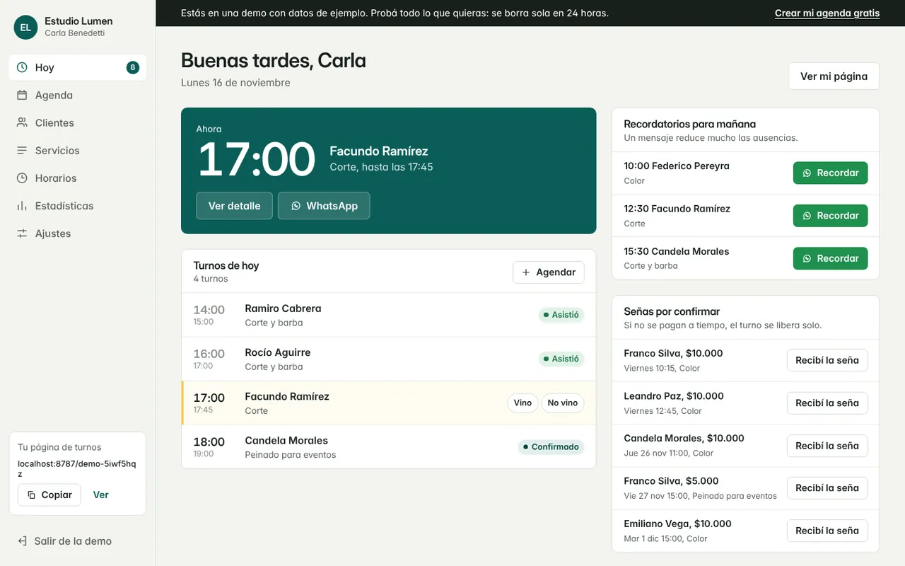

01SaaS · Turnos online
Puntual
Agenda online para profesionales independientes: los clientes reservan solos y el profesional maneja todo desde un panel.
- Reserva sin cuenta, con comprobante, link para reprogramar y archivo de calendario.
- Señas por alias o Mercado Pago que vencen solas y liberan el horario; lista de espera automática.
- Estadísticas de cobros, ausentismo y un mapa de calor de días y horarios.
JavaScriptCloudflare PagesD1 (SQLite)NodePlaywright
«Probar el panel con datos de ejemplo» abre una peluquería con seis meses de historia.